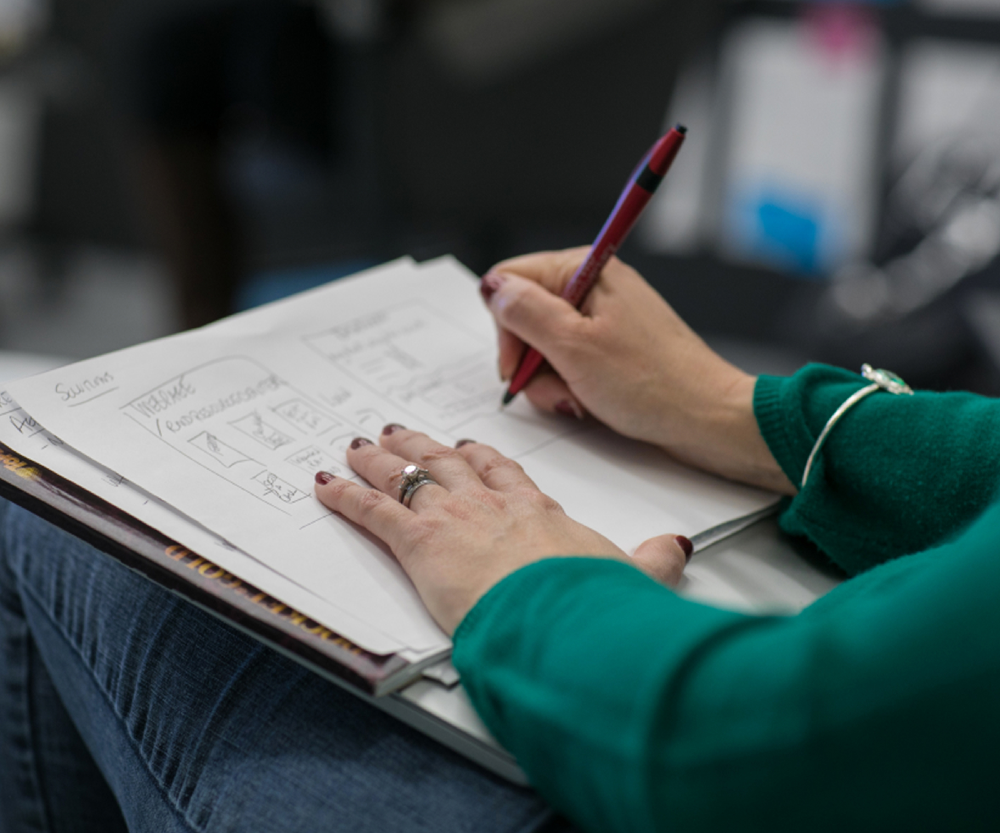
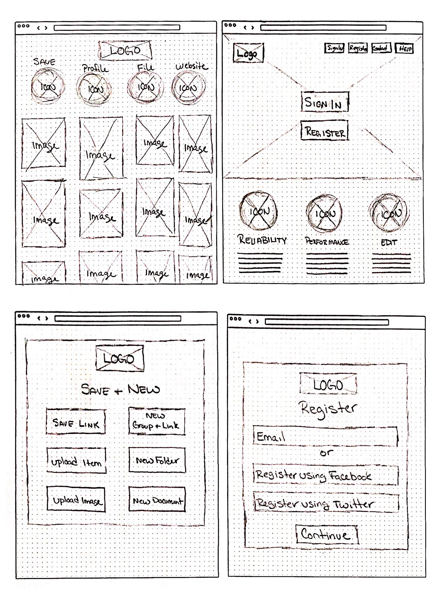
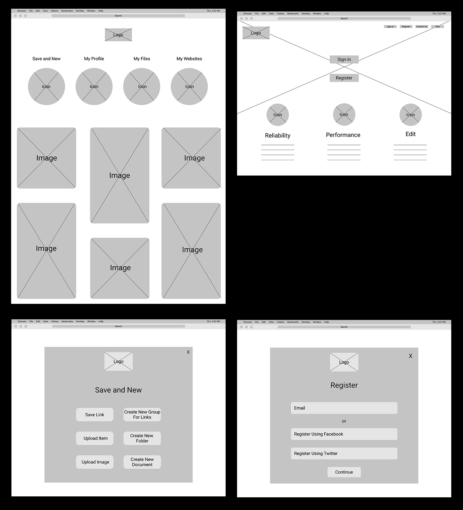
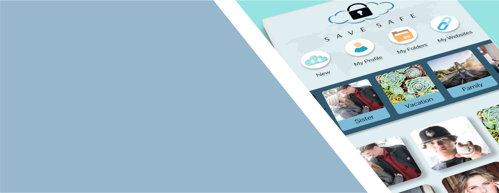
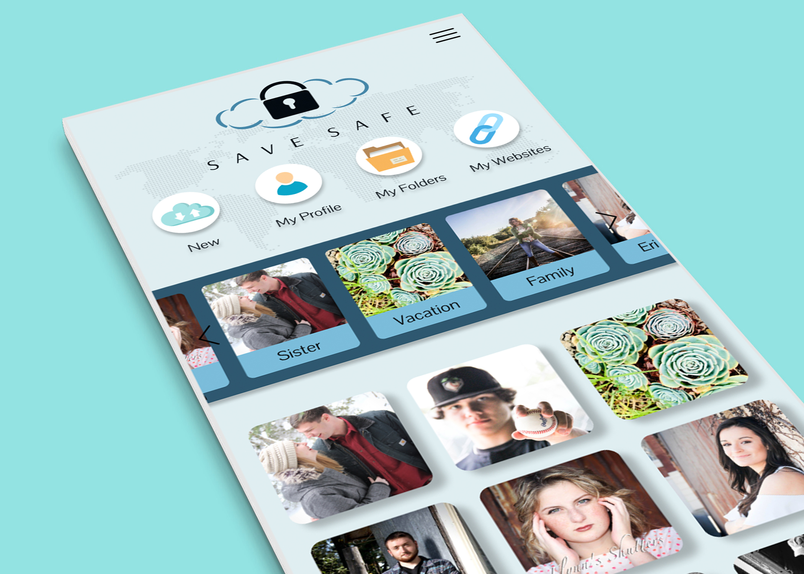
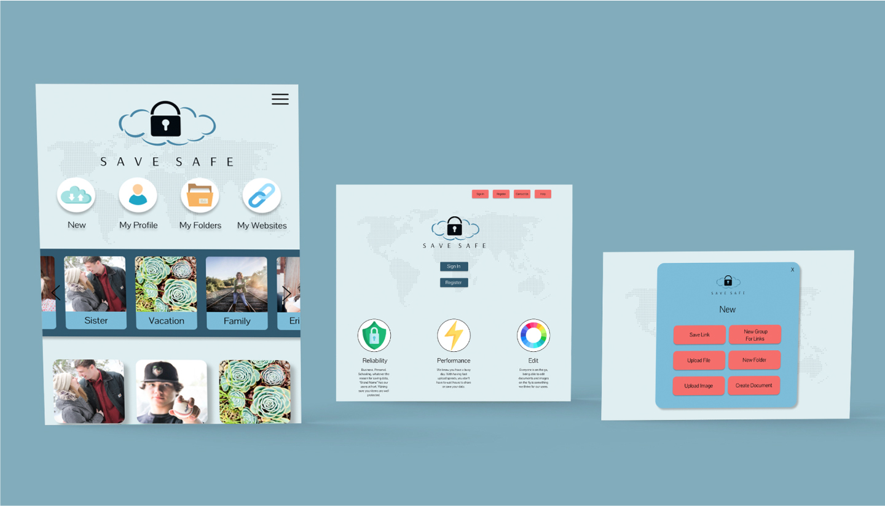
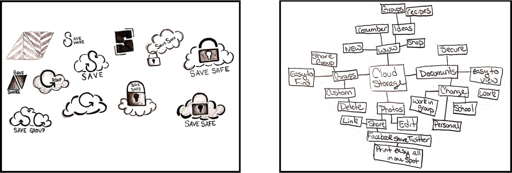
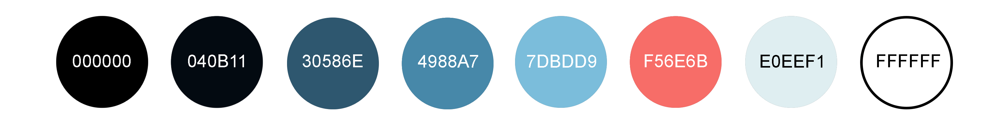

Overview
- Role
- UX Visual Design & Branding
- Tools
- Figma,Invision,Google Docs & Adobe Photoshop
- Date
- Winter 2019
- Skills
- Survey Design, Competitive Analysis, User Stories & Flows, Creating Personas, Conducting User Interviews & Observations, Sketching, Wireframing, Prototyping, User Testing & Analysis
Problem
How would a new company approach a cloud storage service? Google Drive, Dropbox and Pinterest already exists and is doing great, so what grounds have gone yet uncovered that can be explored more fully without trying to compete directly with them? What spaces exist for a second cloud storage app?
These are some of the items that needed to be solved for this project.
- 1.
- Create name or brand
- 2.
- Save content
- 3.
- What platform
- 4.
- Organize content
- 5.
- Target audience
- 6.
- Create new content
- 7.
- Collaboration
- 8.
- Upload new files
Solution
The solution is Save Safe. You can edit and organize your data on the go, Save Safe lets you save documents, photos and websites all in one location. You also can edit all of your items in your cloud.
Desktop Prototype Mobile PrototypeProcess
The cloud storage service is growing and the client seen a opening that allowed users to save everything in one location, but needed help laying and designing this application. This is where I came in, I used the following tools to develop what was needed for Save Safe.
- - User Surveys
- - SWOT Analysis
- - User Personas
- - User Stories
- - User Flows
- - Wireframes
- - Analysis of Testing
- - Mockups
- - Branding Work
- - Typeface
- - Prototype
User Surveys
Conducted user surveys to help better understand what the users want in a cloud storage application. During this test it gave inside on if this application will be used for desktop or desktop and mobile. It also helped find what our target audience will be for this application. Asking the users about collaboration and what every user is looking for in their cloud storage application. This is a great tool to get started figuring out what needs to be in each site.
User Surveys ResponsesSWOT Analysis
Conducting an competitive analysis on Google Drive, Dropbox and Pinterest. Learning what works and what doesn’t work for the users. Doing these analysis allow better understanding what the users need for Save Safe.
Dropbox Google Drive PinterestPersonas
User Personas show what type of users will want to use this application. It allows us to see the age difference and goals of each user and how each user may not use the application the same way.
 Personas
Personas
Everyday User
Leanne, Age: 29
Insurance Rep. Munising, MI

Motivations
- Leanne uses cloud storage service mostly for personal use. With being a insurance representative, she shares data with clients and other coworkers at times. She takes a-lot of photos of her kids and wishes she had a better way to edit and organize her photos on her cloud storage. Her current cloud storage is very hard to understand what is saved, and wants a application that is easer to understand. With a busy life style of working full time and raising kids she forgets what she as already stored in her cloud storage, so a notification would be nice so she doesn’t take up more space then needed.
Goals
- - Edit images
- - View on multiple devices
- - Easier way to organize data
- - Easy way to share data
- - Alert if data is already in storage
- - Easy way to such for data
- - Edit content on cloud
- - Ability to add notes to content
Frustrations
- - More free storage
- - Better security
- - Better way to edit data on cloud
- - Easier way to view data
- - Easier way to share data
- - Better way to save websites
- - Better way to organize websites
- - Have one application to save everything
BIO
- Leanne is a full time insurance representative with two kids. She loves spending time with her family. She is constantly taking photos with her phone to make photo albums for her kids for keep sakes. She spends a-lot of time shopping online because its hard for her to go shopping in the store with the two younger kids. Leanne loves cooking dinner for her family and friends and loves trying new foods.
Non User
Joe, Age: 50
Retured Marquette, MI
Motivations
- Joe currently doesn’t use cloud storage service. He didn’t know there was such a thing to store his data online, but finds it very interesting and would be something he would consider using. With sharing photos with his kids he finds it very interesting to be able to store and share information all in one space. Joe also loves the idea of being able to write his book online and it saving right away. Also being able to access the documents any wear is a big plus, with being retired he could write his book any wear he wanted.
Goals
- - Edit Images
- - Share Photos
- - Edit Data On The Go
- - Access On Multiple Devices
- - Top Security
- - Large Free Space
Frustrations
- - Free Space
- - Security
- - An Easy Application To Understand
- - On The Go Ability
- - Multi Device Access
- - Tutorial Of How The Site Works
BIO
- Joe is recently retired and loves spending his new free time outdoors. With living in Michigan there is a lot of fun things to do outside. He loves hiking and camping with his wife. Joe has two kids that are older and live far away, but loves to stay in touch with his kids. He loves sending photos of the new events he is partaking in. While he is a outdoors man Joe also loves to write and currently writing a book on the unique water falls in the area.
User Stories
When creating the user stories for this application we wanted to display the main functions a user may perform during the use of this application. This gives us the ability to see what needs to be done on the application and what is the main goals for the users. This is an easier way to break down what pages are needed to develop this cloud storage service.
User StoriesUser Flows
Designing user flows after the following tests and research to figure out what would be the best and easiest way to complete high priority tasks for the user. This allows use to make changes easier before designing and layout every page needed.
User Flows
Wireframes
Wireframes are a great way to figure out if the user finds the layout simple or hard to understand without putting a lot of effort into the design process of this application.
Wireframe   Analysis of Test
- Test 1
- During the first test, the tester worked through the functions well. The tester had a hard time understanding some of the names of the buttons, so this is something that needed to be addressed.
- Test 2
- Overall this testers process went well. The tester didn't know how to organize photos, so we needed to figure out a better way to organize the photos into groups for the users.
- Test 3
- During this usability test we learned that the names of the buttons could be better. For they where confusing for this tester.
Mockups
The first mockups some of the colors used in the application didn’t work well together for every user. We tested the new colors against each other to make sure they work well for each user and they did.
Mobile Desktop   Branding
At first glance we want the user to feel this security of this brand. Doing a lot of sketches until we came up with the lock cloud logo. The logo with the blue color scheme will give the users a feeling of trust and experience. We would like to name the brand SAVE SAFE. The name Save Safe says it all about the brand and what this application is designed for, to save and keep safe. All the elements together will play great to deliver the feeling and message to the potential users that they can save everything in a safe and secure area with a easy and fresh feeling.
Style Guide  
Typeface
Choosing Plantagenet Cherokee as one of the options for the brand typeface because it is a serif humanist font. This font is dressy with the feet on all letters, when displayed in a capital display. This font also has uneven lines, which gives it a feeling of strong and elegant all at the same time.
ABCDEFGHIJKLMNOPQRSTUVWXYZ abcdefghijklmnopqrstuvwxyz 0123456789
Pairing it with a complementary typeface that plays well with the brand typeface. Choosing Ovo as the complementary typeface because it is also an elegant and strong font but with lines that are not so vague. This font is also a serif humanist with the feet also giving it a dressy feeling.
ABCDEFGHIJKLMNOPQRSTUVWXYZ abcdefghijklmnopqrstuvwxyz 0123456789
Prototype
Great feedback about names and functions that needed to be added to this application to make it easier for the user. Also we needed to add a photo group area to this application.
Mobile DesktopAnalysis of Test
- Test 1
- Overall the test went very well. The tester didn’t have any issue with completing any of the tasks. The one thing that needed to be addressed is the Drag and Drop page. This works well for a desktop layout but for mobile it doesn't work for the user.
- Test 2
- After this test going over all of the results, finding out that we don’t have an area where users can view groups of images. This would be a great thing to add to the dashboard page for the users. Playing with some ideas on where to place this function to make it easy for the users to view.
- Test 3
- During this test there was some items that needed to be looked into to make it less confusing for the users. The name in the new link needed to be reviewed. The names on the buttons don’t seem to be clear to the users so we would like to look into better names for those buttons. Also the groups for images again. Needing to find a good location for those groups to be located for the users.
Conclusion
Save Safe was a project that taught me the importance of testing throughout this design process. User testing helped determine what needed to happen to make this application successful. Testing allowed for quick interaction and discovery of unidentified problems which resulted in a far improved final product and inspired a more informed solution. With research and more testing it allowed to develop a great brand for Save Safe to develop an application that not only looks great for the users but works great also.
Desktop Prototype Mobile Prototype